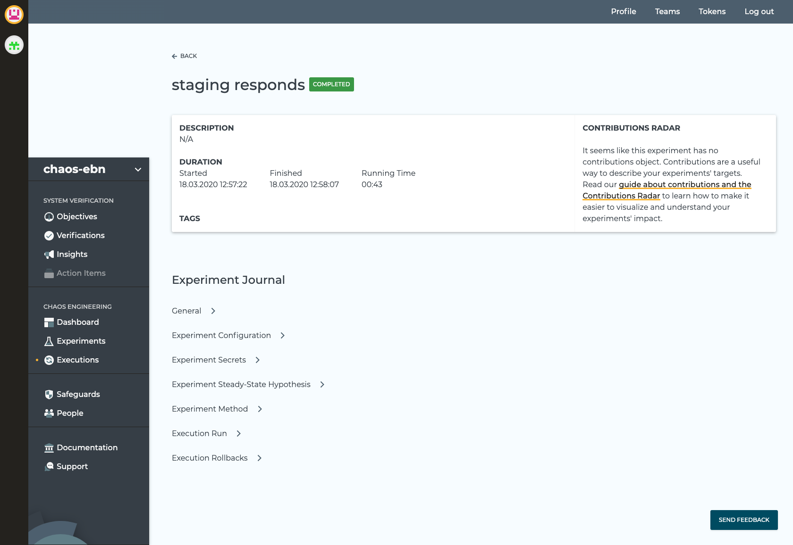
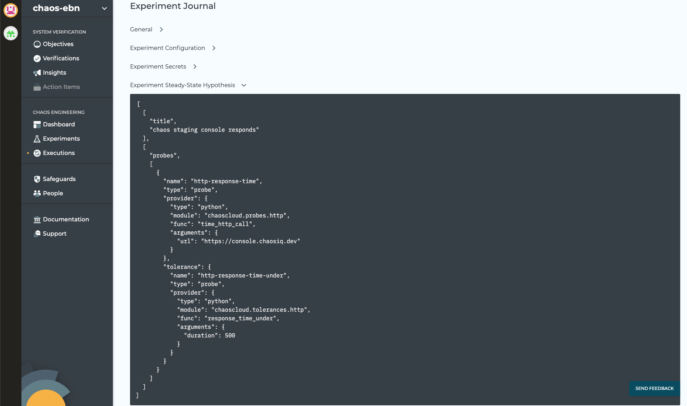

Run and Verify
The Chaos Toolkit supports a number of commands and options, if you have Chaos Toolkit installed, execute the chaos command, you will see output like:
Usage: chaos [OPTIONS] COMMAND [ARGS]...
Options:
--version Show the version and exit.
--verbose Display debug level traces.
--no-version-check Do not search for an updated version of the
chaostoolkit.
--change-dir TEXT Change directory before running experiment.
--no-log-file Disable logging to file entirely.
--log-file TEXT File path where to write the command's log.
[default: chaostoolkit.log]
--log-format [string|json] Console logging format: string, json.
--settings TEXT Path to the settings file. [default:
/Users/grant/.chaostoolkit/settings.yaml]
--help Show this message and exit.
Commands:
discover Discover capabilities and experiments.
info Display information about the Chaos Toolkit environment.
init Initialize a new experiment from discovered capabilities.
run Run the experiment loaded from SOURCE, either a local file or a...
validate Validate the experiment at PATH.
This shows the core Chaos Toolkit support for the chaos run command.
To add the ability to run Verifications and to publish the results to ChaosIQ you need to install the ChaosIQ Plugin. Once the plugin is installed run the chaos command again and you will see:
Usage: chaos [OPTIONS] COMMAND [ARGS]...
Options:
--version Show the version and exit.
--verbose Display debug level traces.
--no-version-check Do not search for an updated version of the
chaostoolkit.
--change-dir TEXT Change directory before running experiment.
--no-log-file Disable logging to file entirely.
--log-file TEXT File path where to write the command's log.
[default: chaostoolkit.log]
--log-format [string|json] Console logging format: string, json.
--settings TEXT Path to the settings file. [default:
/Users/grant/.chaostoolkit/settings.yaml]
--help Show this message and exit.
Commands:
disable Disable a ChaosIQ feature
discover Discover capabilities and experiments.
enable Enable a ChaosIQ feature
info Display information about the Chaos Toolkit environment.
init Initialize a new experiment from discovered capabilities.
org Set ChaosIQ organisation
publish Publish your experiment's journal to ChaosIQ
run Run the experiment loaded from SOURCE, either a local file or a...
signin Sign-in with your ChaosIQ credentials
team Set ChaosIQ team
validate Validate the experiment at PATH.
verify Run the verification loaded from SOURCE, either a local file or...
The ChaosIQ plugin adds some additional commands to the core Chaos Toolkit CLI, this includes commands to signin to ChaosIQ and the command to verify.
You now have availalbe chaos run to run an Experiment and chaos verify to run a Verification. The execution is different for both.
Chaos Run
the chaos run command will execute the experiment given as the SOURCE parameter, an experiment can be specified either a local file or a HTTP resource:
ENDPOINT_URL=https://httpstat.us/200?sleep=2000; \
chaos run https://raw.githubusercontent.com/open-chaos/experiment-catalog/master/local/url-responds/url-responds.json
will give output similar to:
[2020-03-18 10:21:26 INFO] Validating the experiment's syntax
[2020-03-18 10:21:26 INFO] Experiment looks valid
[2020-03-18 10:21:26 INFO] Running experiment: Checks the hypothesis that a URL responds with a 200 status
[2020-03-18 10:21:28 INFO] Execution available at http://console.chaosiq.dev/ChaosIQ/chaos-ebn/executions/6f38b6c5-cf44-4dec-a7b5-7ec6ee03352a
[2020-03-18 10:21:29 INFO] Steady state hypothesis: Application is normal
[2020-03-18 10:21:31 INFO] Probe: application-must-respond-normally
[2020-03-18 10:21:35 INFO] Steady state hypothesis is met!
[2020-03-18 10:21:38 INFO] Action: dummy step
[2020-03-18 10:21:40 INFO] Steady state hypothesis: Application is normal
[2020-03-18 10:21:43 INFO] Probe: application-must-respond-normally
[2020-03-18 10:21:46 INFO] Steady state hypothesis is met!
[2020-03-18 10:21:47 INFO] Let's rollback...
[2020-03-18 10:21:49 INFO] No declared rollbacks, let's move on.
[2020-03-18 10:21:50 INFO] Experiment ended with status: completed
If that same experiment is stored locally in a file e.g. url-responds.json, it can be executed as:
ENDPOINT_URL=https://httpstat.us/200?sleep=2000; \
chaos run url-responds.json
The output will be the same as shown above, the only difference is when the chaos run is provided with a URL it downloads the experiment from the HTTP resource first. The execution then performs the following steps:
- Validate the experiment and if it is syntactically valid it will run it.
- The steady state hypothesis is checked.
- Execute any methods in the experiment (the experiment can include an array of methods).
- The steady state hypothesis is then checked again.
- Finally if there are any rollbacks then these are executed.
When connected to ChaosIQ the result of running an Experiment can be seen on the Executions pages:

If you select the details button for your Experiment can view the detail of the execution:

If you expand the Experiment Steady-State Hypothesis you can see the Steady-State used:

Chaos Verify
The chaos verify command is added to the Chaos Toolkit CLI by the ChaosIQ plugin. A chaos verify command will execute the verification provided the SOURCE parameter. A verification can be specified either a local file or a HTTP resource:
chaos verify https://console.chaosiq.dev/assets/verifications/13e11c55-8fd9-4737-b43f-b62ea763cc6f.json
If that same verification is downloaded and stored locally in a file e.g. verify-staging-dummy-action.json, it can be executed as:
chaos verify verify-staging-dummy-action.json
The output is similar for both commands:
[2020-03-18 12:40:30 INFO] Validating the experiment's syntax
[2020-03-18 12:40:30 INFO] Experiment looks valid
[2020-03-18 12:40:30 INFO] Verification looks valid
[2020-03-18 12:40:31 INFO] Execution available at http://console.chaosiq.dev/ChaosIQ/Staging/executions/68158971-8ed1-45fd-815c-a92233c402f9
[2020-03-18 12:40:33 INFO] Started run '8a99aadf-f9b9-4053-8a3f-ad4cb76ed55c' of verification 'Staging Console should respond within 500 milliseconds with a dummy condition applied.'
[2020-03-18 12:40:34 INFO] Starting verification warm-up period of None seconds
[2020-03-18 12:40:34 INFO] Finished verification warm-up
[2020-03-18 12:40:34 INFO] Triggering verification conditions
[2020-03-18 12:40:35 INFO] Starting verification measurement every 3 seconds
[2020-03-18 12:40:35 INFO] Running verification measurement 1
[2020-03-18 12:40:35 INFO] Steady state hypothesis: Staging Console should respond within 500 milliseconds
[2020-03-18 12:40:35 INFO] Probe: http-response-time
[2020-03-18 12:40:35 INFO] Steady state hypothesis is met!
[2020-03-18 12:40:37 INFO] Action: dummy step
[2020-03-18 12:40:39 INFO] Running verification measurement 2
[2020-03-18 12:40:39 INFO] Steady state hypothesis: Staging Console should respond within 500 milliseconds
[2020-03-18 12:40:39 INFO] Probe: http-response-time
[2020-03-18 12:40:39 INFO] Steady state hypothesis is met!
[2020-03-18 12:40:40 INFO] Finished triggering verification conditions
[2020-03-18 12:40:40 INFO] Starting verification conditions for 10 seconds
[2020-03-18 12:40:43 INFO] Running verification measurement 3
[2020-03-18 12:40:43 INFO] Steady state hypothesis: Staging Console should respond within 500 milliseconds
[2020-03-18 12:40:43 INFO] Probe: http-response-time
[2020-03-18 12:40:44 INFO] Steady state hypothesis is met!
[2020-03-18 12:40:48 INFO] Running verification measurement 4
[2020-03-18 12:40:48 INFO] Steady state hypothesis: Staging Console should respond within 500 milliseconds
[2020-03-18 12:40:48 INFO] Probe: http-response-time
[2020-03-18 12:40:48 INFO] Steady state hypothesis is met!
[2020-03-18 12:40:50 INFO] Finished verification conditions duration
[2020-03-18 12:40:50 INFO] Starting verification cool-down period of None seconds
[2020-03-18 12:40:52 INFO] Finished verification cool-down period
[2020-03-18 12:40:53 INFO] Stopping verification measurements. 4 measurements taken
[2020-03-18 12:40:53 INFO] Triggering any verification rollbacks
[2020-03-18 12:40:53 INFO] Let's rollback...
[2020-03-18 12:40:54 INFO] No declared rollbacks, let's move on.
[2020-03-18 12:40:55 INFO] Finished triggering any verification rollbacks
[2020-03-18 12:40:57 INFO] Finished running verification: Staging Console should respond within 500 milliseconds with a dummy condition applied.
The only difference is when the chaos verify is provided with an HTTP resource, it downloads the verification first. The execution then performs the following steps:
- Validate the verification/experiment is syntactically correct and if it is valid it will run it.
- The steady state hypothesis is checked.
- Execute any methods in the verification.
- The steady state hypothesis is then checked again.
- Then a process is started that will execute the Steady State Hypothesis at the
frequency-of-measurementdefined in the Verification, for theduration-of-conditions(in the case above it takes a measurement every 3 seconds for a period of 10 seconds). - Finally if there are any rollbacks then these are executed.
When connected to ChaosIQ the result of running a Verification can be seen on the insights page:

If you select the details button for your Verification can view the detail of the Verification execution:

The details view includes information about the Objective, the Measurement used and the Verification. It shows the Verification Run Timeline that includes a timeline chart of samples.